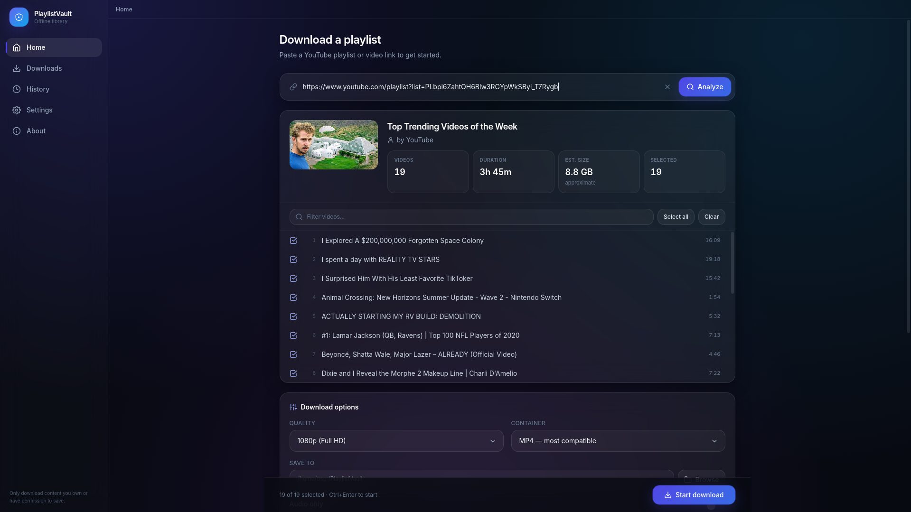
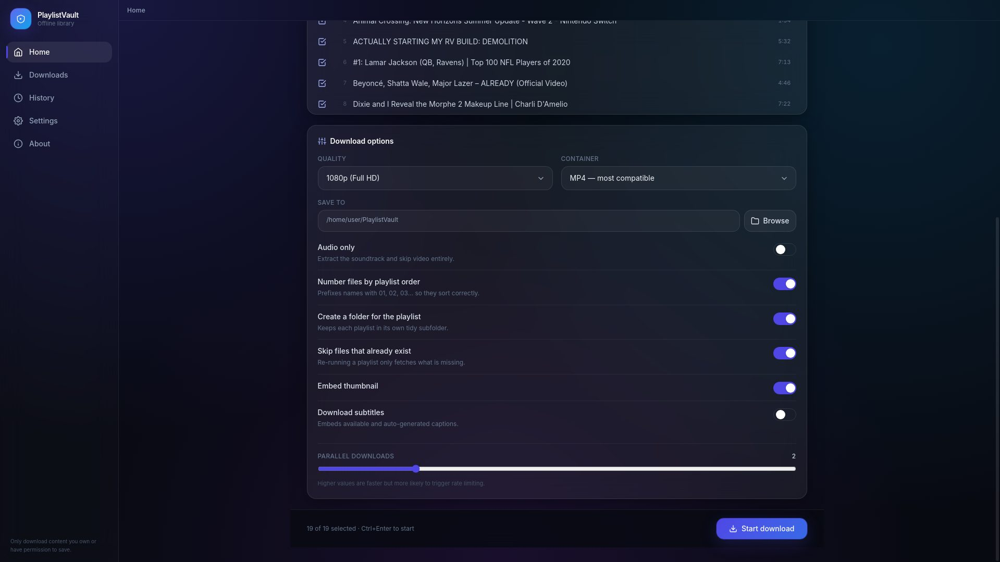
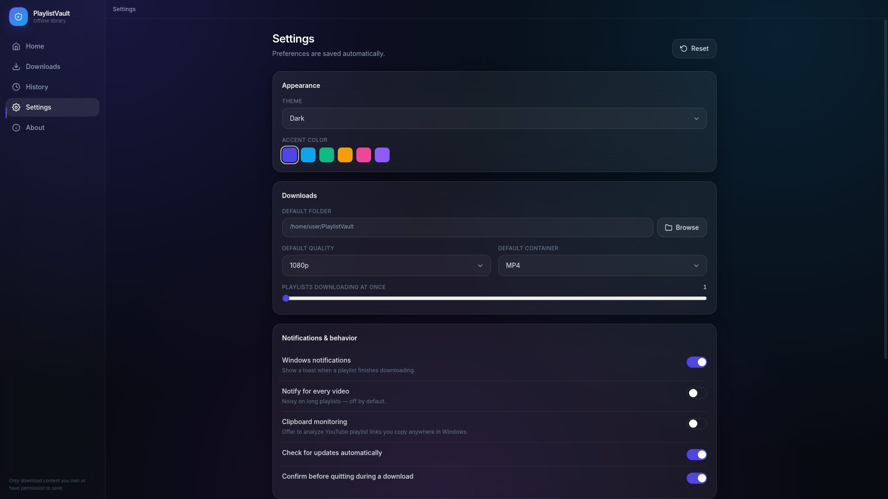

Playlists disappear. Videos get deleted, channels go private, links rot. PlaylistVault archives the ones you have the right to keep — straight to your own drive.
Windows 10/11 · 95 MB · No account required

What it does
Not a toy downloader. It handles thousand-video playlists without complaint.
Paste a link and see every video, total runtime and an estimated download size before committing. A 19-video playlist resolves in under a second.
Fetch several videos at once with live speed and ETA. Pause, resume, reorder the queue or retry a single failed video — nothing starts over.
Every playlist gets a clickable offline index — source URLs, channels, chapters and every link from each description, matched to the exact file on disk.
Zero-padded numbering so files sort correctly in Explorer, sanitised names that never break Windows, and duplicate skipping when you re-run a playlist.
4K down to 360p, MP4 / MKV / WebM, or strip the audio to MP3, M4A, Opus, FLAC or WAV. Subtitles and thumbnails embed automatically.
Every download recorded with favourites, one-click access to the folder, and CSV export. Optional auto-pruning keeps it tidy.
The standout feature
Creators bury the good stuff in descriptions — gear lists, references, papers, follow-up links. When the video goes, those go with it.
PlaylistVault saves a self-contained HTML page beside your videos with everything worth keeping.

Yours to shape
Pick any folder or drive, with your recent destinations one click away. Six accent colours, dark or light, or follow Windows.

See it move
Real footage of the app — no mockups, no motion-graphics fakery.
How it works
No sign-up, no configuration file, no command line.
A playlist, a single video, or a Shorts URL. Drop it on the window if you prefer.
Untick anything you'd rather skip. Choose quality, format and destination.
Watch live progress. Pause and resume freely — it picks up where it left off.
Numbered, named and sorted, with the resource links page sitting alongside.
Nothing to sign up for. Ever.
Zero analytics. Nothing phones home.
Every byte stays on your machine.
Get it
Free, open source, and yours to keep.
PlaylistVault is for archiving content you own, content published under a licence that permits redistribution, or content you have explicit permission to save. Downloading copyrighted material without authorisation may breach YouTube's Terms of Service and the copyright law where you live. How you use this software is your responsibility.
Questions
Yes. Free, open source under the MIT licence, no paid tier and no upsell. The full source is on GitHub if you'd like to read or build it yourself.
You'll see a SmartScreen prompt saying "Windows protected your PC". Click More info → Run anyway.
It appears because the installer isn't signed with a commercial code-signing certificate, which costs several hundred dollars a year. It isn't a malware detection. If you'd rather verify the file yourself, each release lists a SHA-256 hash you can check with Get-FileHash.
A one-time setup screen appears. yt-dlp is already bundled; FFmpeg downloads once (about 90 MB) because it's needed to merge YouTube's separate video and audio streams. If FFmpeg is already on your system, click Re-check and it'll be found automatically.
That's YouTube's bot detection, usually triggered by too many rapid requests, a VPN, or an unfamiliar IP. It's temporary.
Lower the parallel-downloads slider to 1, disable any VPN, wait ten minutes and retry. If a specific playlist always fails, it may be age-restricted or members-only, which reports the same message.
Yes — any folder on any drive, including USB and mapped network shares. Your recent destinations appear as one-click shortcuts. If a drive is disconnected, the app tells you immediately rather than failing silently.
Not as a packaged app yet. The codebase is Electron and runs on both for development, but only a Windows installer is published. If you're comfortable with Node, you can clone the repo and run npm run dev.
Downloading is handled by yt-dlp, which is actively maintained and updates frequently. If downloads start failing after a few months, drop the latest yt-dlp.exe into the app's bin folder — it takes priority over the bundled copy.